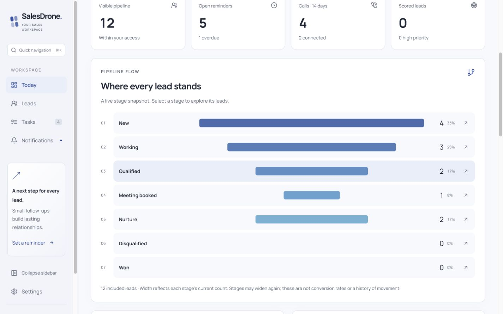
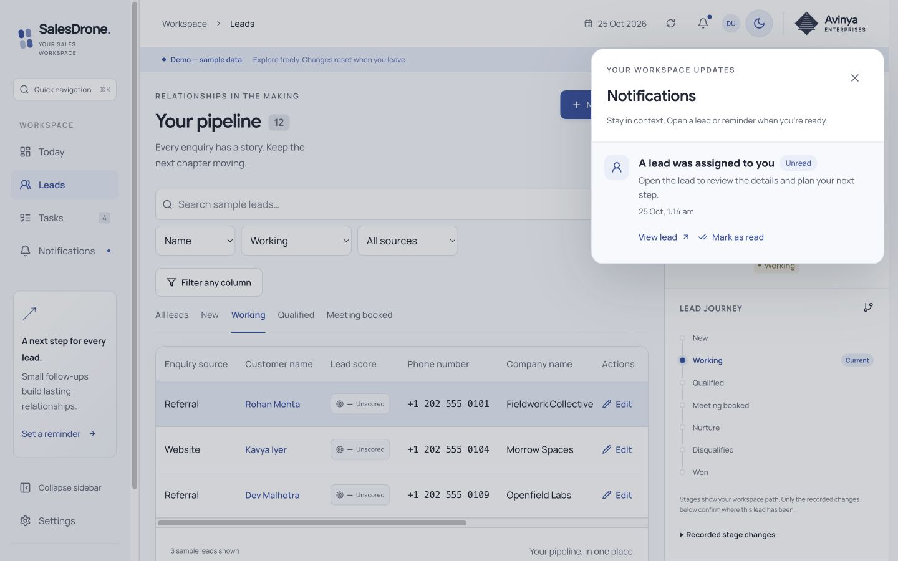
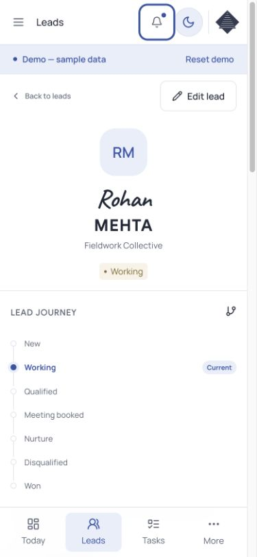

Clear dates can schedule
Dates resolve in the account timezone, including daylight-saving checks.
SalesDrone brings lead details, conversations and follow-ups together. This guide follows a lead from its first spreadsheet row to the next useful conversation—and explains the system behind it.
All screenshots below use synthetic demo data. No customer records are published.

Start with an Excel or CSV import, then capture new enquiries through the form. Map ordinary columns to lead fields. Select every discussion or follow-up column that should become a separate comment. Each nonempty cell becomes its own timeline entry under the same lead.

Historical imported comments preserve the source conversation; importing them does not silently schedule new reminders.
Open a lead to see its current place in your configured sales stages. The recorded history shows actual changes, with their timestamps. Earlier stages are not marked as visited merely because they appear before the current one.
For older leads, SalesDrone says when earlier history is unavailable. New stage changes are recorded atomically with the lead update.
The dashboard funnel includes zero-count stages and your custom values. Its widths reflect current counts, so a later stage can be wider. Select a stage to open a matching lead list.

A note such as “Call them next Tuesday at 10” can become a reminder through server-side Gemini analysis. The worker checks the date, timezone, wording and current permissions before scheduling. You can edit or undo the generated reminder, and manual reminders remain available.

Dates resolve in the account timezone, including daylight-saving checks.
Conditional, conflicting or unclear wording needs review instead of a guessed promise.
Manual edits take priority. Stale analysis cannot revive an old reminder.

The dashboard combines stage mix, outreach trends, reminder workload, city/sector distribution and qualification coverage. Gemini turns the permitted snapshot into a short brief, with links to relevant reminders and leads.
For each lead, Gemini extracts supported factors and exact quotations. The server applies the admin’s weights: matched positive points are normalized to 100, penalties are subtracted and the result is clamped to 0–100. A score includes evidence coverage, not just a number.
A lead with no supported qualification factors stays unscored. Credit, licence, delivery and business-capacity statements remain reported claims—not independent verification or a lending decision.
Snapshots and AI inputs are bounded. The app reports partial coverage when limits apply. Background score population takes multiple runs; editors can refresh an individual lead.
Admins manage people and permissions inside Settings. They can add or retire lead fields, change dropdown choices and configure qualification factors, evidence conditions and weights.
Personal sections cover Google profile, appearance, timezone, automatic-reminder preferences and notification devices. Desktop uses section navigation; mobile uses a section selector.
Collapse the main sidebar using the labelled control above Settings. The notification overlay, touch targets and mobile layout keep the same tasks within reach.

| Concern | Implementation |
|---|---|
| Interface | React 19, TypeScript 5, Vite 7, Radix Dialog, Lucide, responsive CSS |
| Typography | Google Sans headings, Manrope body, Caveat detail first names, monospace phone numbers |
| Backend | Node.js 22, Express 5, Zod 4, Firebase Admin SDK |
| Identity & policy | Firebase Google Auth, App Check, active memberships and assigned/all scopes |
| State & hosting | Firestore Standard, Firebase Hosting, Cloud Functions v2 and Cloud Scheduler |
| Imports | ExcelJS in a bounded browser worker; validated, resumable commits |
| Monitoring | Dynatrace RUM; OpenTelemetry HTTP/protobuf; committed CloudEvents outbox |
| Delivery | GitHub Actions, Google OIDC federation, Firebase CLI and GitHub Pages |
The generated OpenAPI contract defines permissions, validation, errors and pagination. A lead read always checks scope, including scores, journeys and replayed results. Expected versions reject lost updates. Idempotency keys bind selected creates to a request fingerprint. Cursor signatures bind pagination to identity, membership version and filters.
Firestore client reads/writes are denied; the UI uses the authenticated API. Network calls never run inside retried database transactions. Import chunks retain replay identities, while activity corrections preserve their original revisions.
Browse the live OpenAPI reference ↗Reminder workers recheck recipient membership, assignment and suppression before sending. Note-analysis jobs bind to source revision and scheduling preferences. Score workers use bounded scans, leases and failure backoff. A telemetry worker independently drains committed events with stable event IDs.
FCM acceptance is not proof that a person saw a notification. AI output is validated before domain changes. Exporters cannot authorize a request, undo a committed operation or replace an application error.

The application starts at v{{APP_VERSION}}. New releases use semantic versions and dated changelog entries. A main push runs verification, then deploys Firebase rules/indexes, waits for index readiness, deploys the application functions and publishes Hosting assets.
GitHub uses OIDC federation rather than a downloaded service-account key. A successful deployment records its version, commit, run URL and function revisions, then sends the outcome to Dynatrace. Public documentation is published from this curated site only.
RUM observes performance and bounded actions. Replay is disabled; identity is pseudonymous.
Actual OpenTelemetry spans, correlated logs and bounded metrics describe API and worker execution.
Business events come from durable server transactions. Delivery retries reuse event IDs.
HTTP ingest acceptance, tenant-searchable records and a navigable RUM-to-trace link are different verification stages. Ingest-only credentials do not establish the other two.
Release and rollback guide ↗ Monitoring contracts and evidence ↗
A Google sign-in is an identity, not permission to read the live workspace. Unapproved users see synthetic demo records. Server-side capabilities and scope protect lead details, tasks, notifications, histories and AI context.
Credentials stay in Secret Manager and protected workflow secrets. Backend telemetry excludes contact data, comments, task titles and AI content. Public screenshots are captured from the demo and checked before publishing. The public code repository contains no customer workbook or production screenshots.
App-data deletion and exported telemetry retention are separate boundaries. The installation owner should review tenant privacy, masking, consent and retention settings. No generated summary, inferred score or successful network response should be mistaken for independently verified business facts.